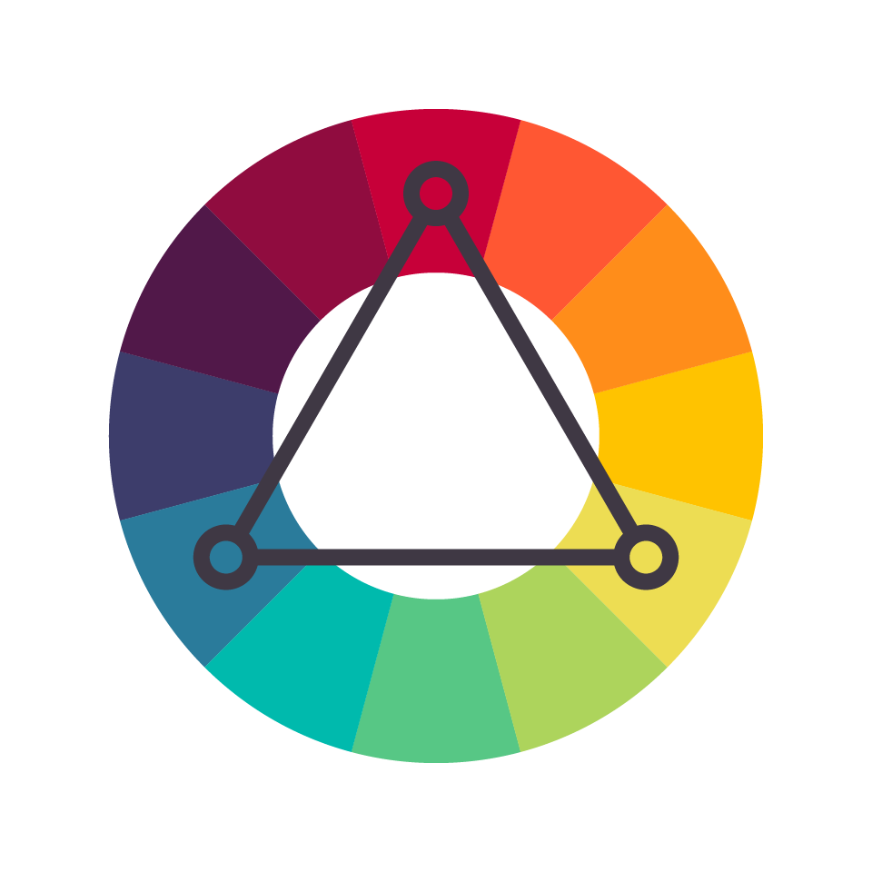
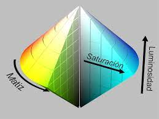
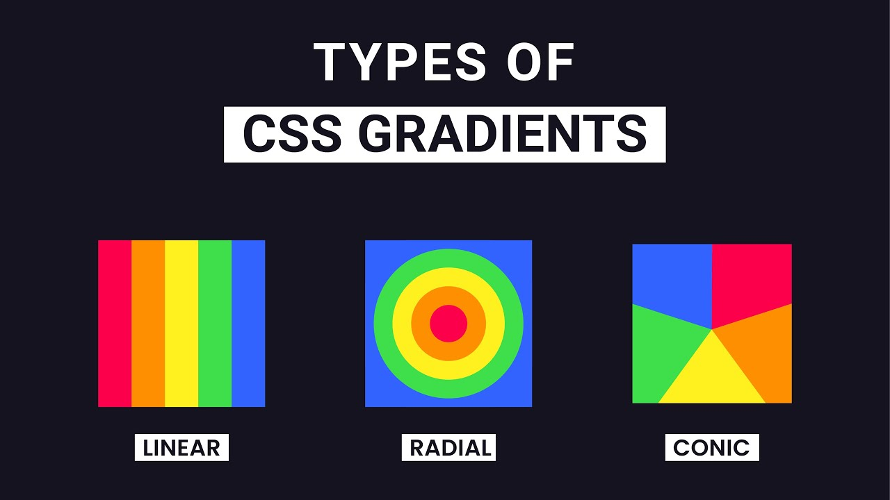
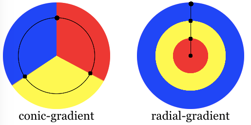

¿Qué se va a ver en el tutorial?
Colores con nombre

Los colores podemos definirlos poniendo solo el nombre del color que
queramos de esta forma:
Sintaxis
color:[Color que queramos, ya sea red,blue,tomato];
Pagina con todos los colores
Ejemplos:
#colorTomate{
color:tomato;
}
#colorLima{
color:lime;
}
#colorAgua{
color: aqua;
}
Color tomate
Color lima
Color agua
currentcolor
Tambien existe la keyword currentcolor, que nos sirve para definir un color por defecto, y despues con poner currentcolor en otro lado estamos usando
el color que definimos al principio. Currentcolor seria es una variable que nosotros definimos al principio del codigo de donde vayamos a usar el currentcolor
y a ese currentColor le asociamos un color, para después usar esa variable donde queramos
Sintaxis
p{
color:[color];
border: [currentcolor]
};
Ejemplos:
div{
color:blue; /*Ahora este color es el que va a estar asociado a currentcolor, serviria como una variable*/
border:3px solid currentColor; /*Y cuando queramos darle color al borde solo ponemos la variable currentColor, que contiene el color azul*/
Ejemplo currentcolor
Hexadecimal en colores
Podemos definir los colores mediante un valor hexadecimal
Sintaxis
p{
color:[Los valores empiezan con # y despues seguido de 6 numeros]
}
Para definir un color hexadecimal lo hacemos con #RRGGBB, donde las
letras significan RR (rojo) GG (green) BB (blue)
Al especificar un color hexadecimal tenemos que saber que las dos
letras de cada color es un rango entre 00 y ff, igual que es en
decimal con 0-255.
Por lo que si queremos escribir un color en rojo tan solo tenemos
que escribir #ff en las letras de RR y todo lo demas a 0: #ff0000
Ejemplos:
h1{
color:#ff0000;
}
h2{
color:#0000ff;
}
h3{
color:#009b00;
}
Color rojo con hexadecimal
Color azul con hexadecimal
Color verde con hexadecimal
Canal alpha en hexadecimal
El canal Alpha tambien se puede introducir en los colores hexadecimales
Sintaxis
p{
background-color:[#RRGGBBAA donde AA es el canal alpha]
}
El canal alpha en hexadecimal tiene un rango desde 00 hasta FF dependiendo de la transparencia que le
queramos dar
Ejemplos:
#hexadecimalSinAlpha{
background-color: #0080FF;
}
#hexadecimalConAlpha{
background-color: #0080FF80;
}
Hexadimal sin canal alpha
Hexadimal con canal alpha
Colores con RGB
Podemos definir un color con RGB()
Sintaxis
p{
color:rgb("numero","numero","numero");
color:rgb("numero%","numero%","numero%")
}
Para definir un color con RGB() necesitamos 3 parametros, que son
numeros del 0-255 cada parametro seguido de una 'coma'
El rango de 0-255 en cada parametro significa la intensidad que se
le da a ese color.
Tambien podemos escribir la intensidad de los numeros seguidos de un
%, el rango sería del 0-100.
| Color |
RGB |
Color |
|
rgb(255,0,0) |
Red |
|
rgb(0,255,0) |
Green |
|
rgb(0,0,255) |
Blue |
Ejemplos:
#colorRojoRGB {
color: rgb(65%, 0%, 0%);
}
#colorGrisRGB {
color: rgb(129, 129, 129);
}
#colorMoradoRGB {
color: rgb(100%, 3%, 100%);
}
Color rojo apagado con rgb
Color gris con rgb
Color morado con rgb
Colores con RGBA (canal alpha)
Al especificar un color con RGB también podemos añadirle el canal
alpha.
El canal alpha tiene un valor numerico que podemos añadir en los
colores para indicar el nivel de transparencia.
Sintaxis
p.a0{
color:[rgb("color"/[nivel de transparencia])];
}
Podemos especificar la transparencia del alpha de esta forma
-
Con rgba() y en la tercera ',' escribir la transparencia del 0 al
1
Ejemplos:
#textoConOpacidad{
color:rgba(255,0,0,0.5);
}
#textoSinOpacidad{
color: rgba(255,0,0,1);
}
Texto con una opacidad del 0.5%
Texto sin opacidad
Definir colores con HSL

Otra forma de definir colores es mediante HSL, sus siglas vienen de
Hue, Saturation y Lightness, que son el tono, la saturacion y la
luminosidad.
La saturacion y la luminosidad son representados en porcentajes. 100% es saturacion al maximo y al 0% es una sombra de gris
En la luminosidad el 100% es blanco, 0% es negro, y en 50% es color "normal"
Sintaxis
h1{
hsl( tono ,saturacion , luminosidad )
}
Para poder elegir un color con HSL debemos saber que valores puede
tener cada parametros, y esos valores son:
-
El tono se puede definir con un rango de 0 a 360, donde 0 es rojo,
120 es verde y 240 es azul
-
La saturación es un valor porcentual donde 0% significa un tono de
gris o donde la saturación es 100% que es el color completo
-
La luminosidad tambien es un valor porcentual, 0% es negro, 50% no
es ni claro ni oscuro y 100% es blanco
Ejemplos:
#hslVerdeClaro{
color:hsl(120,100%,65%);
}
#hslVerdeOscuro{
color: hsl(120,100%,20%);
}
#hslAzul{
color:hsl(240,0%,50%);
}
Color verde claro
Color verde oscuro
Color azul pero saturacion a 0%
Definir colores con HSLA
El significado de las siglas HSLA son, Hue (tono), Saturation (saturacion), Lightness (luminosidad), Alpha (opacidad)
Sintaxis
h1{
hsla( tono , saturacion , luminosidad, alpha )
}
HSLA tiene los mismos valores que HSL, tono tiene un rango de 0-360, donde 0 es rojo, 120 es verde y 240 es azul
saturación puede ser desde 0 a 100%, luminosidad del 0% al 100%.
Por último el canal alpha que con él podemos elegir la opacidad que
queramos que tenga el color, su valor va desde el 0.0 que el color
es transparente del todo hasta el 1.0, que el valor es opaco y el
color se muestra normal
Ejemplos:
#hslaVerde1 {
color: hsla(120, 100%, 65%, 0.2);
}
#hslaVerde2 {
color: hsla(120, 100%, 50%, 0.5);
}
#hslaVerde3 {
color: hsla(120, 100%, 50%, 1);
}
Color verde poca transparencia
Color verde mitad transparencia
Color verde mucha transparencia
Degradado lineal
Tipos de degradado

Los degradados son usados en colores de fondo, o en imagenes de fondo.
Degradado lineal(abajo,arriba,izquierda,derecha,diagonalmente
- Degradados lineales son usados para separar dos o más colores en formatos lineales, como por ejemplo
de arriba a abajo, izquierda a derecha o viceversa. Tambien pueden ir los colores diagonalmente que van
desde una esquina hasta otra
- Tambien podemos hacer degradados con angulo, poniendo el grado, un valor de 0 equivale a hacia arriba,90 grados hacia la derecha, y 180 grados hacia abajo
Sintaxis
div{
background: [Aqui ponemos si queremos que sea linear-gradient o radial-gradient]
/*En caso de que sea linear-gradient(aqui ponemos hacia donde queremos el degradado, despues el color
que queremos que tenga, y hasta cual color va a llegar)*/
Ejemplos:
#grad1 {
height: 100px;
background: linear-gradient(to bottom, red, black);
}
#grad2 {
height: 100px;
background: linear-gradient(to top, blue, green);
}
#grad3 {
height: 100px;
background: linear-gradient(to right, yellow, orange);
}
#grad4 {
height: 100px;
background: linear-gradient(to left, purple, brown);
}
#grad6 {
height: 280px;
background: linear-gradient(to right, red,orange,yellow,green,blue,indigo,violet);
}
Degradado hacia abajo
Degradado hacia arriba
Degradado hacia derecha
Degradado hacia izquierda
Tambien podemos tener un degradado con varios colores, e incluso hacer un arcoiris con degradados
Ejemplos:
#grad5 {
height: 280px;
background: linear-gradient(to bottom, lime,aqua,crimson,deepPink);
}
Degradado con nombres de color
Arcoiris
Existe una funcion que podemos repetir el degradado cada X pixeles, también podemos darle transparencia a un
degradado con rgba
Ejemplos:
#grad7 {
height: 100px;
background: repeating-linear-gradient(red ,yellow 20px);
}
#grad11 {
height: 200px;
width: 200px;
background: radial-gradient(blue,aqua,lime);
}
Funcion repeating-linear-gradient
Degradado lineal con transparencia
Podemos añadirle transparencia a un degradado gracias al canal alpha, podemos hacer que empieze en un color y vaya haciendose
transparente a medida que va hacia X lado
Sintaxis
div{
background: linea-gradient(lado que queramos que vaya,color que empieza, color que acaba con rgba para que tenga transparencia)
Ejemplos:
#grad8 {
background: linear-gradient(to left,rgba(255,0,0,0.0),rgba(255,0,0,1));
}
Transparencia en degradado
Degradado lineal stacked
Podemos stackear muchos degradados que empiezen desde un sitio en concreto, para que su color se mezcle
Ejemplos:
#grad10 {
background: linear-gradient(
200deg,
rgba(250, 0, 0, 0.8),
rgba(255, 0, 0, 0) 70.7%
),
linear-gradient(120deg, rgba(0, 255, 0, 0.8), rgba(0, 255, 0, 0) 70.7%),
linear-gradient(336deg, rgba(0, 0, 255, 0.8), rgba(0, 0, 255, 0) 70.71%);
}
Degradado lineal con angulos
Sintaxis
div{
background:linear-gradient(Grados de la posicion del degradado, el siguiente ejemplo tiene
una disposicion diagonal, con dos colores se reparten en el degradado de manera equitativa)
}
Ejemplos:
#grad9{
height: 100px;
background:linear-gradient(45deg,blue,green)
}
Degradado lineal con colors stops
Un degradado con color stop significa que tiene una parada de color, es decir, que el primer color estaría sin degradado hasta el % del elemento que nosotros digamos y
después empezaría a degradarse hasta el segundo color
Sintaxis
div{
background: linear-gradient(primerColor %[del tamaño del elemento, en este caso div],segundoColor)
Ejemplos:
#grad23{
height: 200px;
width: 200px;
background: linear-gradient(#00f 40%, #000);
}
#grad24{
height: 200px;
width: 200px;
background: linear-gradient(#00f 80%, #000);
}
Degradado radial
El degradado radial se define por su centro, igual que el degradado lineal, tiene que tener al menos dos paradas de color
Sintaxis
div{
background: radial-gradient(posicion de la sombra,color de inicio, color final);
En el primer ejemplo vamos a definir 3 colores y vamos a ver como el primer color es el del centro, el segundo el que va mas pegado al centro y el tercero el color de los bordes
Ejemplos:
#grad11 {
background: radial-gradient(blue,aqua,lime);
}
#grad12 {
background: radial-gradient(red 10%, yellow 20%, green 50%);
}
Degradado radial
Degradado radial con %
Tambien tenemos el metodo repeat en el degradado radial, y se define de esta forma
Sintaxis
div{
background: repeating-radial-gradient(donde empieza el degradado,en que color empieza, que color sigue,
y que color acaba[y podemos poner X pixeles para que el color se repita cada X pixeles]);
Degradado radial con position
Con la posicion podemos definir en que lado queremos empezar el degradado
Sintaxis
div{
background: radial-gradient(posicion,color,color,color);
}
Ejemplos:
#grad25{
background: radial-gradient(at top,red,blue,green);
}
Degradado radial con ending-shape
El ending-shape su valor puede ser un circle haciendo que la sombra del degradado
sea un circulo o un ellipse
Sintaxis
div{
background: radial-gradient(lo que queremos que sea [ellipse/circle],color,color,color)
Ejemplos:
#grad27{
background: radial-gradient(circle,red 20%,blue 50%,rgb(11, 215, 198) 0%);
}
#grad28{
background: radial-gradient(ellipse,red 20%,blue 50%,rgb(11, 215, 198) 0%);
}
Degradado radial con size
Podemos definir el tamaño de un degradado radial con %
Sintaxis
div{
background: radial-gradient([primer % que es el horizontal] [segundo % que es el vertical],color,color,color)
Ejemplos:
#grad29{
background: radial-gradient(50% 30% at center,green,orange,black);
}
#grad30{
background: radial-gradient(90% 10% at center,green,orange,black);
}
Degradado radial con color stop
Con color stops definimos que colores queramos que tenga el degradado y donde deberían de parar, normalmente estan separados equitativamente
pero podemos darle el tamaño del color que queramos
Sintaxis
div{
background: radial-gradient(hacia donde va el degradado,color que empieza,color que sigue,color con el que acaba el degradado)
Ejemplos:
Degradado radial con color hint
El color hint define que color entre los dos color stop tiene que llegar
Sintaxis
div{
background: radial-gradient(color,poncentaje,color)
}
Ejemplos:
#grad34{
height: 200px;
width: 200px;
background: radial-gradient(red,10%,blue);
}
#grad35{
height: 200px;
width: 200px;
background: radial-gradient(red,40%,blue);
}
Degradado cónico

El degradado cónico crea un degradado con transiciones de color que giran alrededor de un punto central
Sintaxis
div{
background: conic-gradient(color,color,color);}
}
Tambien podemos hace que empieze desde un grado en concreto, o bien que vaya desde un grado hasta otro grado.
div{
background: conic-gradient(from [grados deg]color,color,color);}
}
div{
background: conic-gradient(color [gradoInicio],mismo color [gradoFinal],color[gradoInicio,mismo color[gradoFinal]]);
Ejemplos:
#grad17{
height: 250px;
width: 250px;
background-image: conic-gradient(red,blue,green);
}
#grad18{
height: 250px;
width: 250px;
background-image: conic-gradient(from 70deg,red,blue,green);
}
#grad19{
height: 250px;;
width: 250px;
background:cronic-gradient(red 0deg,red 90deg,yellow 90deg, yellow 180deg, green 180deg,green 270deg,blue 270deg, blue 360deg);
}
Degradado conico angulo de inicio
Especificar desde donde sale el degradado con un angulo
Sintaxis
div{
background: conic-gradient(color grados, grados, color grados)
Ejemplos:
#grad43{
background: conic-gradient(red 40grad,80grad, blue 360grad);
}
Degradado conico con posicion
Tambien podemos posicionar el degradado cónico con posicion
Sintaxis
div{
background: conic-gradient(posicion donde queramos el degradado conico, color %,color %, color %)
Ejemplos:
#grad36{
background: conic-gradient(at 0% 30%, red 20%,yellow 30%,rgb(37, 168, 255) 50%);
}
#grad37{
background: conic-gradient(at 20% 30%, red 20%,yellow 40%,rgb(37, 168, 255) 90%);
}
Degradado conico con angulo de color
Por defecto el color stops que especifiquemos esta espaciado de manera equitativamente alrededor del circulo, pero podemos
posicionar el color al principio del degradado cónico usando la palabra from seguido de el grado o la longuitud
Sintaxis
div{
background: conic-gradient(from [longuitud],color,color,color,color%)
}
Ejemplos:
#grad39{
background: conic-gradient(from 40deg,green,yellow,blue,red);
}